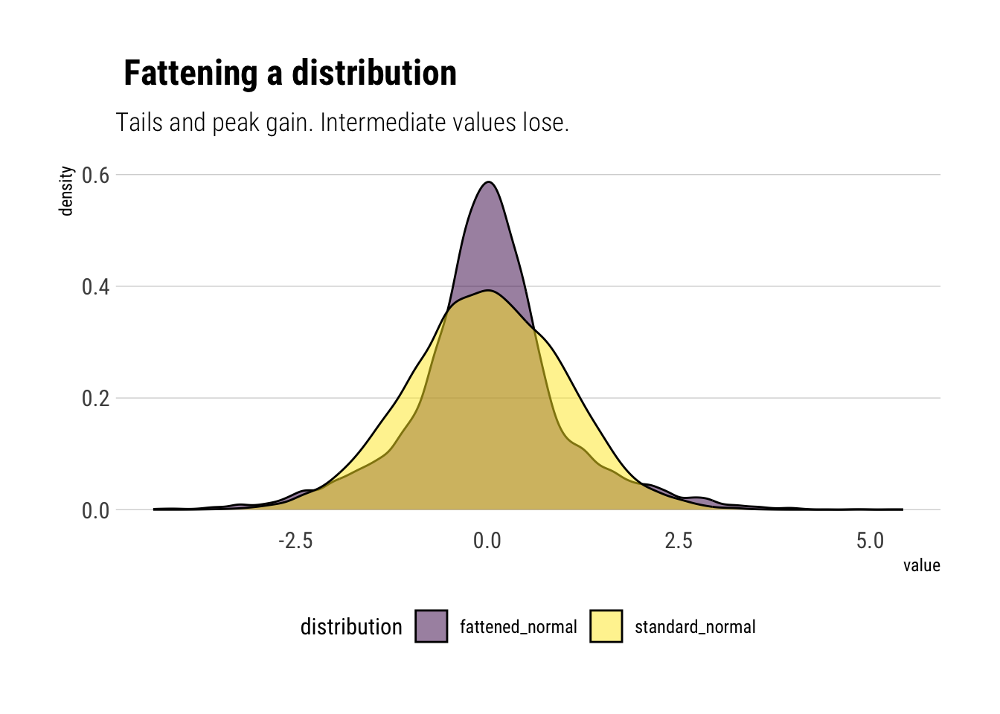
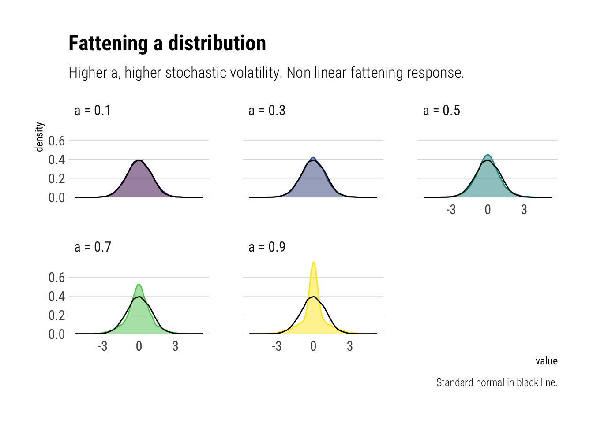
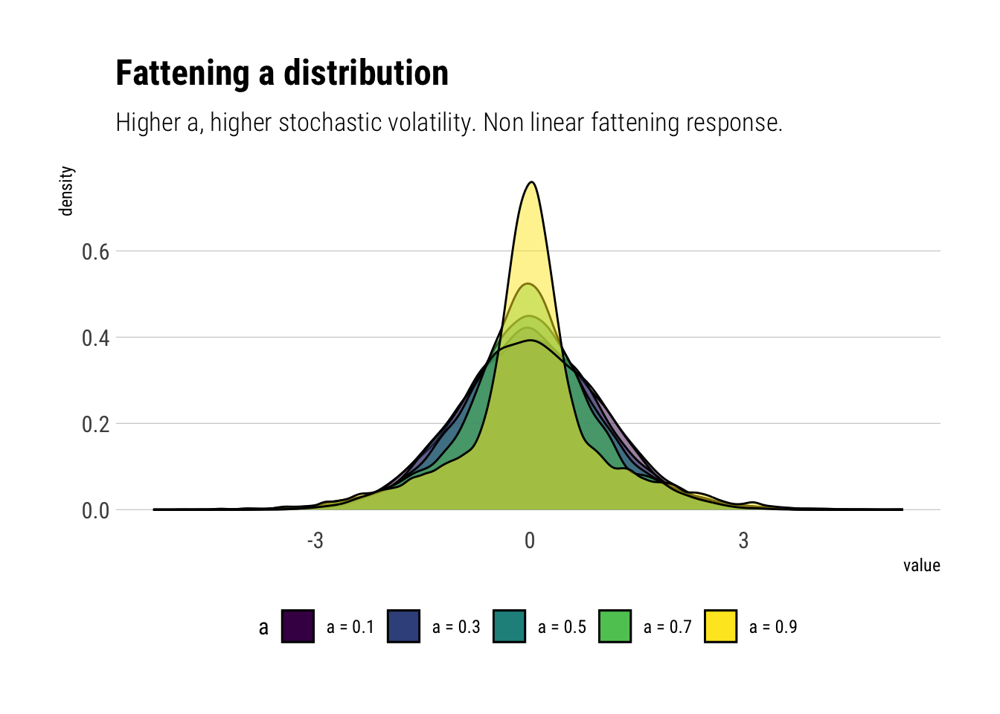

Intuitively, fat tails distribution are distributions for which their PDFs decay to zero very slowly. So slowly, that extreme values start gaining traction in the determination of the whole distribution. Thus, a distribution is fatter than another one if its PDF takes longer to decay to zero.
Fattening the tails
Thus, if we wanted to fatten the tails, the intuitive response is to add more mass at the tails such that the PDF takes more time to decay. However, the PDF must still sum up to 1. From where do we take the mass that we are going to put in the tails?
Nassim Taleb has a great chapter in his latest technical book wherein he explains a simple heuristic to fatten the tails by randomly switching from two different gaussians. Along the way, we learn to identify where the tails begin and what exactly is so difficult about Black Swan events.
The heuristic
Create a random variable \(Fattened\) such that:
with probability \(p = \dfrac{1}{2}\), \(X \sim Normal(0, \sigma \sqrt{1-a})\)
with probability \(1-p =\dfrac{1}{2}\), \(X \sim Normal(0, \sigma \sqrt{1+a})\)
With \(0 \leq a < 1\).
That is, we create a new random variable with an stochastic standard deviation. Let’s simulate samples from this distribution using \(\sigma = 1\) and \(a = 0.8\). We will compare this fattened samples from the samples of a \(X \sim Normal(0, 1)\).
# number of simulated samplesnumber_samples <-10000# simulate number_samples from an uniformp_s <-runif(number_samples)# simulate fattenedfatten_simulations <-function(p_s, a) {# create vector to store sims sims <-vector(length =length(p_s))# sample with probability p p <- p_s <1/2 sims[p] <-rnorm(sum(p), sd =sqrt(1-a)) sims[!p] <-rnorm(sum(!p), sd =sqrt(1+a))return(sims)}# simulated fattenedfattened_normal <-fatten_simulations(p_s, 0.8)# simulate normalstandard_normal <-rnorm(number_samples)# plotdata.frame(n =seq(1, length.out = number_samples), fattened_normal, standard_normal) %>%pivot_longer(-n, names_to ="distribution") %>%ggplot(aes(value)) +geom_density(aes(fill = distribution), alpha =0.5) +scale_fill_viridis_d() +scale_color_viridis_d() + hrbrthemes::theme_ipsum_rc(grid ="Y") +labs(title =" Fattening a distribution",subtitle ="Tails and peak gain. Intermediate values lose.") +theme(legend.position ="bottom")

Therefore, as we stochastize the variance of the distribution, 3 interesting facts arise:
The tails of the distribution grow fatter. The PDF at the tails decays to zero more slowly.
The peak of the PDF is higher: as Taleb writes, “fatter-tails manifest themselves with higher peaks”.
Intermediate events are less likely. Note the yellow are above the fattened tail for intermediate values.
Thus, we can know answer our question: the probability that the tails gain is taken from the probability of the intermediate events. And then the intermediate events lose even more probability as moderate deviations also gain probability.
Why does this happen?
We have stochastized the variance of the distribution. Thus, the variance of the distribution has a variance. In particular, this variance of the variance grows with \(a\): the larger the \(a\), the bigger the difference between the two possible variances of the two different distributions from which we will sample. Taleb writes: “a is roughly the mean deviation of the stochastic volatility parameter”.
Taleb shows this effect on the tails by analyzing the kurtosis of the transformed variable in terms of \(a\). The characteristic function is thus:
\[ \phi(t, a) = \dfrac{1}{2} e^{-\dfrac{1}{2}(1+a)t^2\sigma^2} (1 + e^{at^2\sigma^2})\] The fourth derivative evaluated at zero:
\[ M(4) = 3 (a^2+1) \sigma^4 \]
Thus, the higher the \(a\), the larger the kurtosis. Thus, we can tinker with the following idea: if the kurtosis is convex to the scale of the distribution, are tail probabilities also convex to the scale of the distribution?
Convexity of the tail
Thus, to find the size of the response to the scale of the distribution, let’s analyze tail probabilities as we grow the parameter \(a\) which controls the scale of the distribution. Thus, we find the sensitivies of the tail probabilities to perturbations in the variance and we can find out if tail probabilities are indeed convex to the scale of the distribution.
Let’s run the experiments:
standard_normal <-data.frame(standard_normal)# create the different values for aa_s <-seq(0.1, 0.9, by =0.2)names(a_s) <-unlist(map(a_s, ~ glue::glue("a = {.x}")))a_s %>%# evaluate the function for different values of amap_df(~fatten_simulations(p_s, a = .x)) %>%mutate(sim =seq(1, number_samples)) %>%pivot_longer(-sim, names_to ="a") -> different_asdifferent_as %>%# plot the distributionsggplot(aes(value)) +geom_density(aes(fill = a,color = a), alpha =0.5) +geom_density(data = standard_normal,aes(standard_normal)) +scale_fill_viridis_d() +scale_color_viridis_d() +facet_wrap(~a, ncol =3) + hrbrthemes::theme_ipsum_rc(grid ="Y") +theme(legend.position ="none") +labs(title ="Fattening a distribution",subtitle ="Higher a, higher stochastic volatility. Non linear fattening response.",caption ="Standard normal in black line.")

And now with all curves in one plot:
different_as %>%ggplot(aes(value)) +geom_density(aes(fill = a), alpha =0.5) +geom_density(data = standard_normal,aes(standard_normal)) +scale_fill_viridis_d() +scale_color_viridis_d() + hrbrthemes::theme_ipsum_rc(grid ="Y") +theme(legend.position ="bottom") +labs(title ="Fattening a distribution",subtitle ="Higher a, higher stochastic volatility. Non linear fattening response.")

Thus, given the non-linear response of the tail probabilities to changes in \(a\), we can conclude, as Taleb does with derivatives, that tail probabilities are indeed convex to the scale of the distribution.
Where do tails begin?
With this insight, we can respond the important question: where do the tails begin?. The tails are the points at the extremes where the probabilities are convex to the stochastic volatility. That is, where changes in the stochastic volatility generate non-linear changes in the probability. Thus, we arrive at a problem: probability estimation at the tails is unreliable. If we cannot reliably estimate the standard deviation, then the errors will propagate non-linearly into the estimation of tail probabilities.
Therefore, Taleb concludes that the problem of Black Swans arises not only from the large size of the possible deviations, but also from the unreliability with which we can estimate the probability of these events.
Conclusions
By investigating how we can fatten a variably by randomly switching from two gaussians, Taleb has shown us a great deal about fat tails. How the distribution changes. And, critically, that the tail probabilities are convex to the scale of the distribution. Thus, small errors in the estimation in the scale will create large problems in the estimation of tail probabilities.